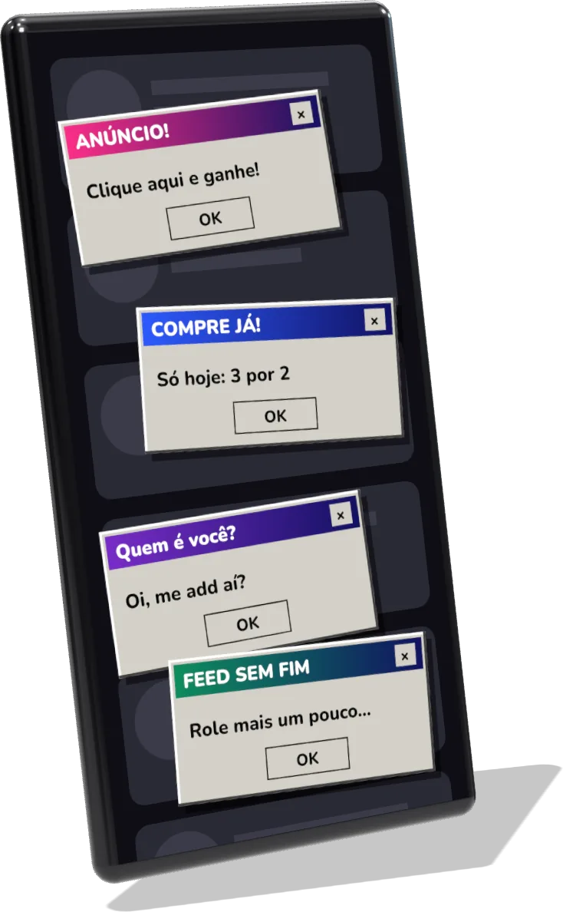

Hoje, para falar com a vó…
…a criança ganha um celular inteiro. Com feed, anúncio e gente estranha junto.
Não precisa ser assim.

Apresentamos o Oiê.
O telefone de casa, no tablet. Para ligar para a vó, o primo e o melhor amigo.
É fácil assim:
- Toca na foto da vó.
- Fala, escreve ou manda figurinha.
- Chega no WhatsApp dela, pelo seu.
Mas espera… tem mais!
- Liga pra quem gosta. Vó, primo, melhor amigo: quem você escolher.
- Áudio, foto e figurinha. Do jeitinho que criança gosta.
- Sem anúncio. Sem feed. Nada de rolar sem fim.
- O Oiê não tem servidor. Nada sobre a família chega até nós.
Celular x Oiê
| O quê | Celular | Oiê |
|---|---|---|
| Com quem fala | Qualquer um | Só quem você aprovou |
| Anúncios e feed | Muitos | Nenhum |
| Dados da criança | Podem virar anúncio | Não chegam até nós |
| Precisa de | Chip, plano e um aparelho só dela | O tablet de casa e o seu WhatsApp |
E quanto custa?
R$ 0,00
É de graça. E o código é aberto: qualquer um pode conferir o que ele faz.
Baixe já!
Baixar o OiêAbra esta página no tablet Android da criança (Android 8 ou mais novo). O botão leva ao arquivo mais recente, no GitHub.
Antes de conectar, leia o aviso: o WhatsApp pode restringir ou bloquear números.
- No tablet da criança, toque em Baixar o Oiê e abra o arquivo.
- Se o Android pedir, permita instalar. Se ele não deixar, quem cuida do tablet pode liberar.
- Abra o Oiê, leia o QR com o seu WhatsApp e escolha os contatos.
Aviso
O Oiê é um app independente que conecta ao seu WhatsApp como o WhatsApp Web faz. Não é afiliado ao WhatsApp nem à Meta.
Use por sua conta: o WhatsApp pode restringir ou bloquear números que usam apps de terceiros. O Oiê manda no ritmo de uma pessoa, uma mensagem de cada vez, e explica isso antes de você conectar.
Perguntas
Quem recebe precisa instalar alguma coisa?
Não. A família e os amigos recebem no WhatsApp deles, como uma mensagem sua, com o nome da criança na frente.
A criança pode falar com os amigos?
Pode, se você adicionar. Ela só fala com quem você aprovar, e ninguém de fora fala com ela pelo Oiê.
O Oiê é do WhatsApp?
Não. É um app independente, que conecta ao seu WhatsApp como o WhatsApp Web, e não é afiliado ao WhatsApp nem à Meta. O WhatsApp pode restringir ou bloquear números que usam apps de terceiros.
Eu vejo o que a criança manda?
Vê. As mensagens saem do seu WhatsApp, então ficam no seu celular também. A criança sabe disso desde o primeiro dia.
O Oiê guarda alguma coisa sobre a minha família?
Não. O Oiê não tem servidor. As mensagens vão só pelo WhatsApp. Não tem análise de uso, anúncio nem rastreamento. A única outra conexão é para ver se há versão nova, no GitHub.
E se o WhatsApp bloquear o meu número?
O Oiê para na hora, mostra no tablet o aviso do WhatsApp e não tenta de novo sozinho. No seu celular, siga o que o WhatsApp mostrar. Você pode desconectar o Oiê em Aparelhos conectados.
Por que não está na Play Store?
Por enquanto o Oiê é baixado direto da página de versões. Cada versão traz um código (SHA-256) para conferir que o arquivo é o original, e o app avisa quando tem versão nova.